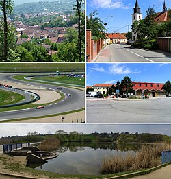

Brno-Žebětín
Brno-Žebětín je městská část na západním okraji statutárního města Brna.
Je tvořena městskou čtvrtí Žebětín (německy Schebetein),
původně samostatnou obcí, která byla k Brnu připojena v roce 1971.
Její katastrální území má rozlohu 13,60 km².
Samosprávná městská část vznikla 24. listopadu 1990. Žije zde přibližně
3600 obyvatel.

Video průvodce - youtube
Zpět
Ostatní stránky:
- Brno - Královo Pole
- Brno - Bosonohy
- Brno - Útěchov
- Brno - Chrlice
- Brno - Ivanovice
- Brno - Starý Lískovec
- Brno -Jundrov